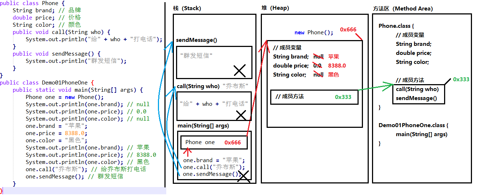

原文连接:https://www.cnblogs.com/tester-ggf/p/11921034.html
目录
Java程序在内存中运行详解
Java语言是一门编译型语言，需要将编写的源代码（.java文件）编译之后（.class字节码文件），通过 jvm 才能正常的执行，下面的内容记录了一个程序从编写到执行整个过程在内存中是怎么一个变的。
一、JVM的内存分布
先了解下 JVM 的内存分布，因为Java程序想要运行，就要依靠 JVM，可以把JVM理解成Java程序和操作系统之间的桥梁，JVM 实现了Java 的平台无关性，由此可见JVM的重要性。所以在学习 Java 内存分配原理的时候一定要牢记这一切都是在 JVM 中进行的，JVM 是内存分配原理的基础与前提。
1.jvm内存分布图
从图片中看，一共分为了5大区域，分别是：方法区、堆、栈、本地方法区、程序计数器。
这里我们主要了解下 方法区、堆、 栈、这三个区域。
2.方法区：
方法区是一块所有线程共享的内存区域。
保存系统的类信息，比如，类的字段，方法，常量池等等。
方法区的大小决定了系统可以保存多少个类，如果系统定义了太多的类，导致方法区溢出，虚拟机同样会抛出内存溢出的错误
jdk1.6和jdk1.7方法区可以理解为永久区。
jdk1.8已经将方法区取消，替代的是元数据区。
jdk1.8的元数据区可以使用参数-XX:MaxMetaspaceSzie设定大小，这是一块堆外的直接内存，与永久区不同，如果不指定大小，默认情况下，虚拟机会耗尽可用系统内存。
3.堆：
用来存放动态产生的数据，比如new出来的对象。注意创建出来的对象只包含属于各自的成员变量，并不包括成员方法。因为同一个类的对象拥有各自的成员变量，存储在各自的堆中，但是他们共享该类的方法，并不是每创建一个对象就把成员方法复制一次。在堆中只会存储成员方法的地址，在调用的时候，根据地址去方法区中执行对应的成员方法。
4. 栈：
栈生命周期与线程相同。启动一个线程，程序调用函数，栈帧被压入栈中，函数调用结束，相应的是栈帧的出栈。
栈帧由局部变量表，操作数栈，帧数据区组成。
局部变量表：存放的是函数的入参，以及局部变量。
操作数栈：存放调用过程中的计算结果的临时存放区域。
帧数据区：存放的是异常处理表和函数的返回，访问常量池的指针。
举个例子，线程执行进入方法A，则会创建栈帧入栈，A方法调用了B方法，B栈帧入栈，B方法中调用C方法，C创建了栈帧压入栈中，接下来是D入栈
反过来，D方法执行完，栈帧出栈，接着是C、B、A。
二、程序执行的过程
从上图我们看到了一个程序在内存中执行的过程。
上图的执行流程：
1.从 disk 中将 MainApp.class 加载到 jvm 的方法区中。
2.执行 main 方法，将该 main 方法中包含的变量和函数，压到栈中。
3.开始执行 main 方法中的指令，创建一个 animal 对象， 将 new 出来的 animal 对象存储到堆中，animal 引用指向堆中的 animal 对象，堆中的 animal 对象指向方法区中的 Animal 类。
4.继续执行 main 方法中的指令，调用 animal 对象中的 printName() 方法，这时 animal 应用调用 animal 对象， animal 对象找到方法区的 Animal 类中的 printName() 字节码信息，根据该描述信息，开始执行 printName方法。
三、只有一个对象时的内存图

从左侧我们看到有两个类,按照Java程序的执行流程，会把这两个类编译成 .class 文件，即图中最右边的 Phone.class he Demo01PhoneOne.class。
首先程序开始执行是从 main() 方法开始，这个时候会把 main() 方法压到栈中，main() 方法中的第一句代码是先创建一个 Phone 对象，当我们 new 一个对象时，会把 new 出来的对象放到堆中，相对应的给这个对象分配一个地址值，在栈中会产生一个实例 one 会指向这个地址，可以看到堆中的对象包含了自身的成员变量和成员方法的引用。
接着继续执行下面的代码，直接打印对象的属性值，由于对象属性没有进行赋值，所以输出的都是对应数据类型的默认值。 继续下面的操作，就是给对象的属性进行赋值，由于 one 是指向了对象，所以直接可以进行操作，这时在堆中的属性值就会被赋予对应的值了。再次打印的时候就会打印出对应的值。
再到后面，继续调用了对象的成员方法，这个时候需要先在堆中找到这个成员方法的应用，然后找到方法区中将对应的代码压到栈中，继续执行。调用方法会传入对应的参数，也是放到栈中的，执行完这个方法之后，压到栈中的这一部分代码就会出栈，直到 main() 方法中所有的代码执行完，栈中的内容也就全部消失，内存也就随之释放。
四、两个对象使用同一个方法的内存图

这里和上面不同的是创建了两个对象，但是操作的内容还是和上面一样的。唯一区别就是在调用成员方法时，调用的是同一个。
刚开始也说到了，同一个类创建多个对象时，他们是各自拥有自己的成员变量了，但是应用的成员方法却是同一个。
从图中我们就可以看出，给两个对象进行赋值时，是会打印出不同的值的。调用方法时，使用的还是同一个方法。
五、两个引用指向同一个对象的内存图

当我理解了前面两个图后，看到这里应该也不会有什么难度了，这里我们只 new 了一个对象，但是却有两个实例，从图中也可以看到堆里面只有一个对象。
看到图最左边，我们把 one 实例直接就赋值给了 two, 其实就是把 one 的地址值赋给了 two， 这时 two 也就和one 指向了同一个对象。这时去改变对象中的值，就会把 one 原来赋的值直接覆盖掉。最终打印的就是 two 实例赋的值了。
六、使用对象类型作为方法参数的内存图

使用对象类型作为方法的参数，在传递的过程中，实际上传递的是引用，即对象的地址值。当我们在另外一个方法中改变了这个对象的属性时，对象原来的值就会被覆盖。
七、对象类型作为方法返回值得内存图

对象类型作为返回值也是一样的道理，返回的实际是对象的地址值。
八、总结
分清什么是实例什么是对象。Class a= new Class(); 此时 a 叫实例，而不能说 a 是对象。实例在栈中，对象在堆中，操作实例实际上是通过实例的指针间接操作对象。多个实例可以指向同一个对象。
栈中的数据和堆中的数据销毁并不是同步的。方法一旦结束，栈中的局部变量立即销毁，但是堆中对象不一定销毁。因为可能有其他变量也指向了这个对象，直到栈中没有变量指向堆中的对象时，它才销毁，而且还不是马上销毁，要等垃圾回收扫描时才可以被销毁。
以上的栈、堆、代码段、数据段等等都是相对于应用程序而言的。每一个应用程序都对应唯一的一个JVM实例，每一个JVM实例都有自己的内存区域，互不影响。并且这些内存区域是所有线程共享的。这里提到的栈和堆都是整体上的概念，这些堆栈还可以细分。
类的成员变量在不同对象中各不相同，都有自己的存储空间(成员变量在堆中的对象中)。而类的方法却是该类的所有对象共享的，只有一套，对象使用方法的时候方法才被压入栈，方法不使用则不占用内存。
对象类型作为方法的参数或者方法的返回值时，传递的都是对象的地址值。再其他地方修改这个对象的属性值时，原有的值就会被覆盖掉。
参考文章：